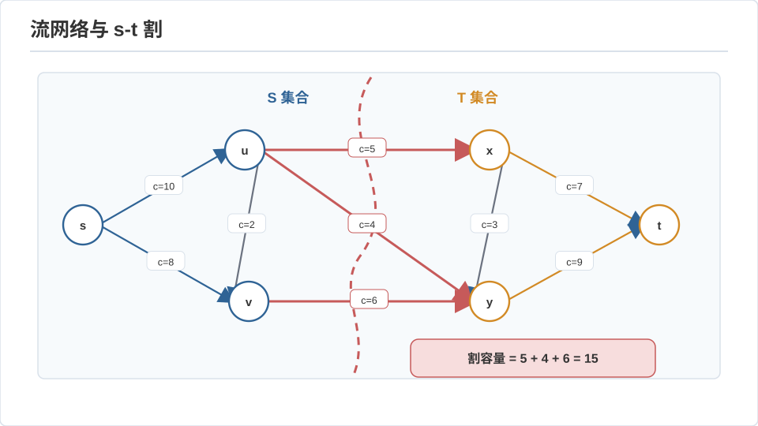
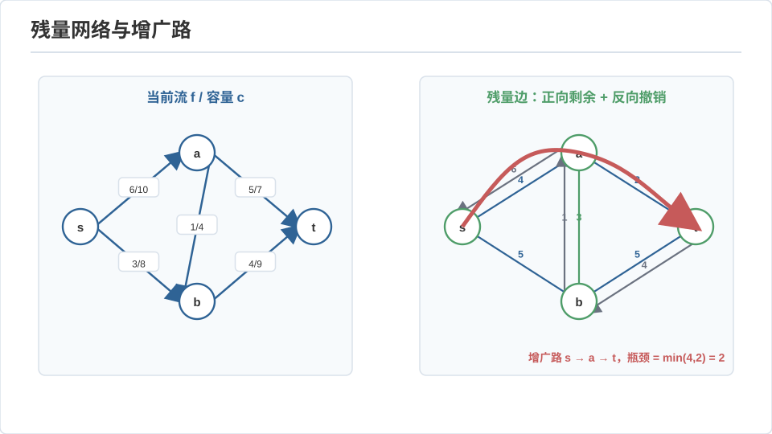
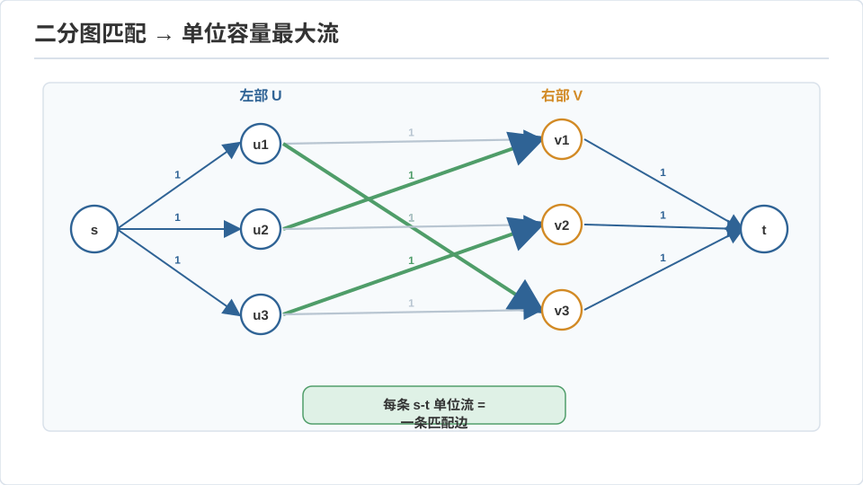

算法 II · 网络流与线性规划
对标：CS170 / CLRS 第 24–26 章 / Vazirani Approximation Algorithms ｜ 前置：algo-01、数学站优化线（LP 对偶你已证过） 这一页对你是全站互链最密的一处：最大流–最小割定理就是 LP 强对偶在图上的具体化身。你在优化课上证过 \(\max c^Tx = \min b^Ty\)，这里我们看它如何变成"水管网络里能流多少水 = 切断网络的最便宜方式"，再看图论一大批问题（匹配、覆盖、调度）如何全归约到流。
1. 网络流：定义与最大流最小割
流网络：有向图 + 源 \(s\)、汇 \(t\)、每边容量 \(c(u,v)\ge 0\)。流 \(f\) 满足容量约束 \(0\le f\le c\) 与守恒（除 \(s,t\) 外流入=流出）。流值 \(|f|\) = 净流出 \(s\) 的量。割 \((S,T)\)：把点分成含 \(s\) 的 \(S\) 与含 \(t\) 的 \(T\)，割容量 = 从 \(S\) 到 \(T\) 的边容量之和。

最大流最小割定理【推导级】：
弱对偶方向（任意流 \(\le\) 任意割）显然：流从 \(s\) 到 \(t\) 必须穿过割，穿过量 \(\le\) 割容量。强对偶方向（取等可达）用增广路证明：给定一个流，构造残量网络（每边剩余容量 \(c-f\)，反向边容量 \(f\)）。若残量网络里还有 \(s\to t\) 路径（增广路），就能推更多流；若没有，令 \(S\) = 残量网络里 \(s\) 可达的点集——则 \(S\to T\) 的所有原边已饱和（否则残量可达）、\(T\to S\) 的边流量为 0，于是 \(|f| = \text{cap}(S,T)\)，两边相等 ⇒ 都是最优。\(\blacksquare\)
这就是 Ford–Fulkerson：反复找增广路推流直到没有。用 BFS 找最短增广路 = Edmonds–Karp，\(O(nm^2)\)；更快的有 Dinic \(O(n^2m)\)、以及现代的 push-relabel。

2. 它就是 LP 对偶（🔗 优化线的图上变现）
最大流是一个线性规划：变量是每边流量、目标 \(\max|f|\)、约束是容量 + 守恒（都线性）。写出它的对偶，你会发现对偶变量恰好是"点的势"，对偶最优的 0/1 解就是最小割——最大流最小割 = LP 强对偶的一个整数化特例。
为什么这里 LP 的最优解自动是整数（0/1 割、整数流）？因为流网络的约束矩阵是全幺模（totally unimodular）的——每个子方阵行列式 ∈ {−1,0,1}。全幺模保证：整数右端 ⇒ LP 顶点全整数 ⇒ 松弛与整数规划最优值相等。这是"图论问题能高效精确解"的深层结构原因：一旦问题的 LP 是全幺模的，就没有整数规划的 NP 之痛。匹配、指派、流都在这个幸运家族里。
3. 归约的威力：一切都是流
网络流的真正价值是当归约目标——大量看似无关的问题包装成流就解了：
- 二分图最大匹配：加源汇、每条匹配边容量 1 ⇒ 最大流 = 最大匹配（König 定理"最大匹配 = 最小点覆盖"正是这里的最小割）。
- 二分图最小点覆盖 / 最大独立集：由匹配经 König 定理得到。
- 项目选择 / 最大权闭合子图：正收益点连源、负成本点连汇、依赖连 ∞ ⇒ 最小割选出最优子集（Medusa 若做"选哪些新闻源使覆盖最大成本最小"就是这个模型）。
- 调度、图像分割（min-cut/max-flow 在 CV 里做前景分割）、棒球淘汰判定……

方法论：学最大流最重要的不是算法本身，是"识别一个问题能否包装成流"的眼力。判据：有没有"守恒 + 容量瓶颈"的结构？有就试流。
4. 线性规划：算法与对偶的两张脸
LP：\(\max c^Tx\) s.t. \(Ax\le b, x\ge 0\)。
解法【骨架】：
- 单纯形法：在可行多面体的顶点间沿边走向更优——实践极快，但最坏指数（Klee–Minty 立方体）。几何直觉你已有：最优必在顶点（凸函数在凸多面体上）。
- 内点法：走多面体内部的中心路径趋近最优——多项式时间（Karmarkar），大规模求解器的主力。
- 椭球法：理论上首个多项式算法（Khachiyan），实践慢，但威力在于只要有分离预言机就能优化——组合优化里许多多项式结果靠它。
对偶与互补松弛（🔗 优化线原文）：强对偶 \(\max c^Tx=\min b^Ty\)；互补松弛——最优处，"松弛的约束对应为零的对偶变量"。它在算法设计里是原始–对偶方法的引擎：许多近似算法（下页）就是"同时构造原始解与对偶证书、用对偶下界证明近似比"。
5. 练习与要点
例 1（匹配即流手算） 3×3 二分图画出来，加源汇建流网络，跑一遍增广路，验证最大流 = 最大匹配数、且最小割对应最小点覆盖——König 定理在你笔下从最大流掉出来。
例 2（全幺模的边界） 二分图匹配 LP 整数最优（全幺模），但一般图匹配的自然 LP 不是整数的（奇环破坏全幺模，需要 Edmonds 的奇集不等式）——"为什么二分图匹配比一般图匹配简单"有了精确的代数答案。
例 3（对偶当下界） 你要证明某个最小割 \(\ge 17\)，怎么不枚举所有割？答：构造一个流值为 17 的流——弱对偶立刻给出下界。"构造对偶可行解来证明界"是本页最可迁移的一招（贯穿近似算法、竞赛、研究）。\(\blacksquare\)
下一页：随机化、近似与 NP 归约——当问题 NP 难时，随机与近似如何把"无望"变成"可用"。